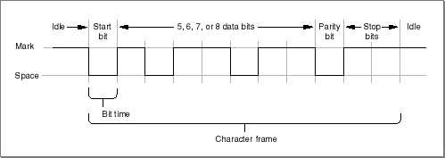

Legacy Document
Important: The information in this document is obsolete and should not be used for new development.
Important: The information in this document is obsolete and should not be used for new development.


About Serial Endpoint Providers
Open Transport serial endpoint providers provide full-duplex low-level support for asynchronous serial data transfers through the built-in serial port and any serial choice registered with the Communications Resource Map. Serial endpoint providers use connection-oriented data streams. They do not support the functions that provide connectionless or transaction-based service. Because of the point-to-point nature of serial communications, there are a few differences between using a serial endpoint and using other connection-oriented endpoints.One of the key differences is that there are no addresses for serial endpoints because serial communications is point-to-point. As such, no addressing information is possible and all address parameters for serial endpoint functions need to be set to zero.
The other important difference is that only one serial endpoint can own the hardware at a given time. That is, only one serial endpoint provider can initiate and accept a connection on a given port at a time, although there can be several listening endpoints on a given port simultaneously.
About Serial Communication
Open Transport serial communication, like any data transfer between endpoints, requires coordination between the sender and receiver; for example, when to start the transmission and when to end it, when one particular bit or byte ends and another begins, when the receiver's capacity has been exceeded, and so on. The scope of serial data transmission protocols is large and complex, encompassing everything from electrical connections to data encoding methods. This section provides a brief overview of the protocol that governs the lowest level of data transmission--how serialized bits are sent over a single electrical line.When a sender is connected to a receiver over an electrical connecting line, the line is initially in an idle state, called the mark state. Changing the state of the line by shifting the voltage is called a space. The receiver interprets a space as a 0 bit, and a mark as a 1 bit. These transitions are shown in Figure 19-1.
The change from the mark state to a space is known as the start bit, and this triggers the synchronization necessary for asynchronous serial transmission. The start bit delineates the beginning of the transmission unit defined as a character frame. The receiver then samples the state at periodic intervals, known as the bit time, to determine whether a 0 bit or a 1 bit is present on the line.
Figure 19-1 The format of serialized bits

The bit time is expressed in samples per second, known as the baud rate. The baud rate must be agreed upon by sender and receiver before transmitting data in order for a successful transfer to occur. Common values are 1200 baud and 2400 baud. In the case where one sampling interval can signal a single bit, a baud rate of 1200 results in a transfer rate of 1200 bits per second (bps). Note that because modern protocols can express more than one bit value within the sampling interval, the baud rate and the transfer rate may not be identical.
Before transmission, the sender and receiver also agree on a serial data format; that is, how many bits of data constitute a character frame and what happens after those bits are sent. Open Transport serial endpoints support frames of 5, 6, 7, or 8 bits in length. Character frames of 7 or 8 data bits are commonly used for transmitting ASCII characters.
After the data bits in the frame are sent, the sender can optionally transmit a parity bit for error-checking. There are various parity schemes, which the sender and receiver must agree upon prior to transmission. In odd parity, a bit is sent so that the entire frame always contains an odd number of 1 bits. Conversely, in even parity, the parity bit results in an even number of 1 bits. No parity means that no additional bit is sent.
To signify the end of the character frame, the sender places the line back to the mark state for a minimum specified time interval. This interval has one of several possible values: 1 bit time, 2 bit times, or 1-1/2 bit times. This signal is known as the stop bit, and returns the transmission line back to the mark state.
Electrical lines are always subject to environmental perturbations known as noise. This noise can cause errors in transmission by altering voltage levels so that a bit is reversed, shortened, or lengthened. When this occurs, the ability of the receiver to distinguish a character frame may be affected, resulting in a framing error.
The break signal is a special signal that falls outside the character frame. The break signal occurs when the line is switched from the mark state to a space and held there for longer than a character frame. The break signal resembles an ASCII NUL character (a string of 0-bits), but exists at a lower level than the ASCII encoding scheme that commonly governs the encoding of information within the character frame.
DTR and CTS Signals
The electrical characteristics of a serial communications connection are specified by various interfacing standards. The specifications of these standards are contained in documents available from the Electronic Industries Association (EIA) that cover aspects of the connection, such as its electrical signal characteristics and its interface circuits.The principal signals used by Open Transport serial endpoint providers are the Data Terminal Ready (DTR) and Clear To Send (CTS) signals. These two signals are connected to each other. Note that in the definitions of these signals which follow, the term data terminal equipment (DTE) is used to describe the initiator or controller of the serial connection, typically the computer. The term data communication equipment (DCE) describes the device that is connected to the DTE, such as a modem or printer. For specific information about how these signals are used in Macintosh computers, see Guide to the Macintosh Family Hardware, second edition.
- The Data Terminal Ready (DTR) signal indicates that the DTE (that is, your computer) is ready to communicate. Deasserting this signal causes the DCE (that is, your modem or printer) to suspend transmission.
- The Clear To Send (CTS) signal indicates that the DCE (your modem or printer) is ready to send data.
Asynchronous and Synchronous Communication
Serial data transfers depend on accurate timing in order to differentiate bits in the data stream. This timing can be handled in one of two ways: asynchronously or synchronously. In asynchronous communication, the peers agree on a clocking mechanism before data is transferred; in synchronous communication, the signal carries the clocking information. The terms asynchronous and synchronous are slightly misleading because both kinds of communication require synchronization between the sender and receiver.Asynchronous communication is the prevailing standard in the personal computer industry.
Open Transport serial endpoints do not support synchronous communications protocols. However, they do support synchronous clocking supplied by an external device.
- IMPORTANT
- Do not confuse asynchronous communication with asynchronous execution. Asynchronous communication is a protocol for coordinating serial data transfers. Asynchronous execution refers to the capability of a device driver to carry out background processing. Serial endpoints support both asynchronous communication and asynchronous execution.

Handshaking Methods for Flow Control
Because a sender and receiver can't always process data at the same rate, some method of negotiating when to start and stop transmission is required. Open Transport serial endpoint providers support two methods of controlling serial data flow, known as handshaking. One method relies on the serial port hardware, the other is implemented in software.Hardware handshaking uses two of the serial port signal lines to control data transmission. When the serial endpoint provider is ready to accept data from an external device, it asserts the Data Terminal Ready (DTR) signal on pin 1 of the serial port, which the external device receives through its Clear To Send (CTS) input. Likewise, the Macintosh receives the external device's DTR signal through the CTS input on pin 2 of the serial port. When either the Macintosh or the external device is unable to receive data, it deasserts its DTR signal, and the sender suspends transmission until the signal is asserted again.
Software handshaking uses an agreed-upon set of characters for the start and stop signals. Open Transport serial endpoints support XON/XOFF handshaking, which typically assigns the ASCII DC1 character (Control-Q) as the start signal and the DC3 character (Control-S) as the stop signal, although you can choose different characters.
Subtopics
- About Serial Communication
- DTR and CTS Signals
- Asynchronous and Synchronous Communication
- Handshaking Methods for Flow Control